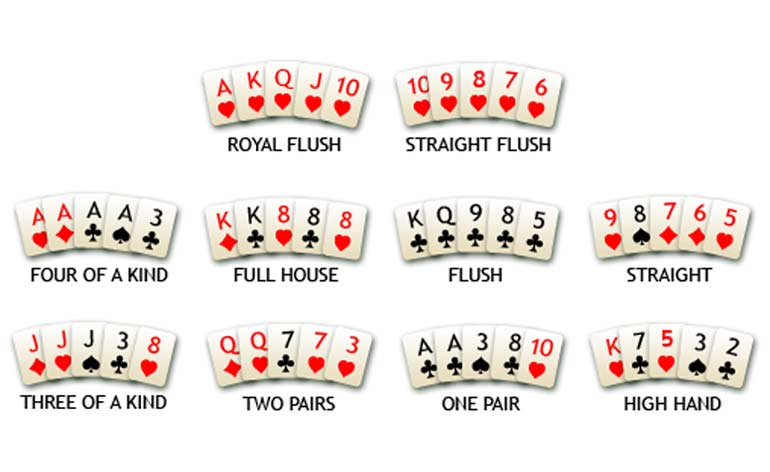

val float : value:'T -> float (requires member op_Explicit)
Full name: Microsoft.FSharp.Core.Operators.float
--------------------
type float = System.Double
Full name: Microsoft.FSharp.Core.float
--------------------
type float<'Measure> = float
Full name: Microsoft.FSharp.Core.float<_>
| Empty
| Node of value: int * left: Tree * right: Tree
Full name: Index.Tree
val int : value:'T -> int (requires member op_Explicit)
Full name: Microsoft.FSharp.Core.Operators.int
--------------------
type int = int32
Full name: Microsoft.FSharp.Core.int
--------------------
type int<'Measure> = int
Full name: Microsoft.FSharp.Core.int<_>
Full name: Index.tree
Full name: Microsoft.FSharp.Core.ExtraTopLevelOperators.printf
Full name: Index.sprintfResult
Full name: Microsoft.FSharp.Core.ExtraTopLevelOperators.sprintf
Full name: Index.countInternal
Full name: Index.( example 1.1 )
Full name: Index.sumLeaves
Full name: Index.( exercise 1.1 )
Full name: Index.firstList
Full name: Index.secondList
Full name: Index.concatenatedList
Full name: Index.collectLeaves
Full name: Microsoft.FSharp.Collections.list<_>
Full name: Index.( example 1.2 )
Full name: Index.collectInOrder
Full name: Index.( exercise 1.2 )
Full name: Index.isSorted
Full name: Microsoft.FSharp.Core.bool
Full name: Index.( exercise 1.3 )
Full name: Index.incrementValues
Full name: Index.( example 1.4 )
Full name: Index.insertBST
Full name: Index.( exercise 1.4 )
| Two
| Three
| Four
| Five
| Six
| Seven
| Eight
| Nine
| Ten
| Jack
...
Full name: Index.Figure
| Diamonds
| Spades
| Hearts
| Clubs
Full name: Index.Suit
Full name: Index.Card
Full name: Index.Hand
Full name: Index.oddNumbers
module List
from Microsoft.FSharp.Collections
--------------------
type List<'T> =
| ( [] )
| ( :: ) of Head: 'T * Tail: 'T list
interface IEnumerable
interface IEnumerable<'T>
member GetSlice : startIndex:int option * endIndex:int option -> 'T list
member Head : 'T
member IsEmpty : bool
member Item : index:int -> 'T with get
member Length : int
member Tail : 'T list
static member Cons : head:'T * tail:'T list -> 'T list
static member Empty : 'T list
Full name: Microsoft.FSharp.Collections.List<_>
Full name: Microsoft.FSharp.Collections.List.filter
Full name: Index.kingSpades
Full name: Index.figure
Full name: Index.suit
Full name: Index.queenHearts
Full name: Index.queen
Full name: Microsoft.FSharp.Core.Operators.fst
Full name: Index.hearts
Full name: Microsoft.FSharp.Core.Operators.snd
Full name: Index.threeKings
Full name: Index.( example 2.1 )
Full name: Microsoft.FSharp.Collections.List.forall
Full name: Index.handFlush
Full name: Index.isFlush
Full name: Index.( exercise 2.1 )
Full name: Index.mapModThree
Full name: Microsoft.FSharp.Collections.List.map
Full name: Index.groupModThree
Full name: Microsoft.FSharp.Collections.List.groupBy
Full name: Index.( example 2.2 )
System.String.ToCharArray(startIndex: int, length: int) : char []
Full name: Index.handFullHouse
Full name: Index.isFullHouse
Full name: Index.( exercise 2.2 )
{X: float;
Y: float;}
Full name: Index.Point
{Shape: Shape;
Center: Point;}
Full name: Index.PositionedShape
PositionedShape.Shape: Shape
--------------------
type Shape =
| Square of edge: float
| Rectangle of width: float * height: float
| Circle of radius: float
Full name: Index.Shape
Full name: Index.point
Full name: Index.shape
| Square of edge: float
| Rectangle of width: float * height: float
| Circle of radius: float
Full name: Index.Shape
Full name: Index.pointX
Full name: Index.shapeField
Full name: Index.shapesAreEqual
Full name: Index.forthAndBack
Full name: Microsoft.FSharp.Core.Operators.sqrt
Full name: Index.withCenterIn
Full name: Index.( example 2.3 )
Full name: Index.isCircumcircle
Full name: Index.( exercise 2.3 )
Full name: Index.positionedShape
Full name: Index.squareMoved
Full name: Index.circleWithSameCenter
Full name: Index.translate
Full name: Index.( example 2.4 )
Full name: Index.scale
Full name: Index.( exercise 2.4 )
val char : char
--------------------
type char = System.Char
Full name: Microsoft.FSharp.Core.char
static val DBNull : obj
static member ChangeType : value:obj * typeCode:TypeCode -> obj + 3 overloads
static member FromBase64CharArray : inArray:char[] * offset:int * length:int -> byte[]
static member FromBase64String : s:string -> byte[]
static member GetTypeCode : value:obj -> TypeCode
static member IsDBNull : value:obj -> bool
static member ToBase64CharArray : inArray:byte[] * offsetIn:int * length:int * outArray:char[] * offsetOut:int -> int + 1 overload
static member ToBase64String : inArray:byte[] -> string + 3 overloads
static member ToBoolean : value:obj -> bool + 17 overloads
static member ToByte : value:obj -> byte + 18 overloads
...
Full name: System.Convert
(+0 other overloads)
System.Convert.ToInt32(value: string) : int
(+0 other overloads)
System.Convert.ToInt32(value: decimal) : int
(+0 other overloads)
System.Convert.ToInt32(value: float) : int
(+0 other overloads)
System.Convert.ToInt32(value: float32) : int
(+0 other overloads)
System.Convert.ToInt32(value: uint64) : int
(+0 other overloads)
System.Convert.ToInt32(value: int64) : int
(+0 other overloads)
System.Convert.ToInt32(value: int) : int
(+0 other overloads)
System.Convert.ToInt32(value: uint32) : int
(+0 other overloads)
System.Convert.ToInt32(value: uint16) : int
(+0 other overloads)
struct
member CompareTo : value:obj -> int + 1 overload
member Equals : obj:obj -> bool + 1 overload
member GetHashCode : unit -> int
member GetTypeCode : unit -> TypeCode
member ToString : unit -> string + 1 overload
static val MaxValue : char
static val MinValue : char
static member ConvertFromUtf32 : utf32:int -> string
static member ConvertToUtf32 : highSurrogate:char * lowSurrogate:char -> int + 1 overload
static member GetNumericValue : c:char -> float + 1 overload
...
end
Full name: System.Char
System.Char.IsDigit(s: string, index: int) : bool
Full name: Index.digit
Full name: Index.( |Digit|_| )
System.Int32.ToString(provider: System.IFormatProvider) : string
System.Int32.ToString(format: string) : string
System.Int32.ToString(format: string, provider: System.IFormatProvider) : string
Full name: Index.matchNext5
val list : int list
--------------------
type 'T list = List<'T>
Full name: Microsoft.FSharp.Collections.list<_>
Full name: Index.( example 3.1 )
Full name: Index.parseScore
val char : value:'T -> char (requires member op_Explicit)
Full name: Microsoft.FSharp.Core.Operators.char
--------------------
type char = System.Char
Full name: Microsoft.FSharp.Core.char
from Microsoft.FSharp.Core
Full name: Index.( exercise 3.1 )
Full name: Index.onlyEvenNumber
Full name: Index.onlyEvenNumbers
Full name: Index.numTriangle
Full name: Index.triangle
Full name: Index.countScore
Full name: Index.( exercise 3.2 )
Full name: Index.optsToOpt
Full name: Microsoft.FSharp.Core.Option.map
Full name: Microsoft.FSharp.Collections.List.rev
Full name: Index.oneOption
Full name: Index.bowlingScore
val string : value:'T -> string
Full name: Microsoft.FSharp.Core.Operators.string
--------------------
type string = System.String
Full name: Microsoft.FSharp.Core.string
Full name: Index.( homework 1 )
Full name: Index.parseScoreTail
Full name: Index.countScoreTail
Full name: Index.bowlingScoreTail
Full name: Index.( homework 2 )
F# CAMP
Functional Data Structures
1:
|
|
or download ZIP from here, then in Command Prompt:
1: 2: |
|
slides are regenerated when the script (.\slides\index.fsx) is saved
==> NOTE: this is a different GIT repository, don't mix it with the one from previous workshops
Agenda
- Sum Types (Discriminated Unions)
- Product Types (Tuples, Records)
- Lists
- Homework
Sum Types
Discriminated Unions
New Stuff 1.1
Discriminated Unions reminder
1: 2: 3: 4: 5: |
|
Binary Tree as DU
1: 2: 3: |
|
Binary Tree as DU
1: 2: 3: 4: 5: 6: 7: 8: 9: 10: 11: 12: |
|

printf and sprintf for debugging
1: 2: 3: |
|
Value of sprintfResult
|
Example 1.1
Counting internal nodes (nodes that have at least one non-empty child)
1: 2: 3: 4: 5: 6: 7: 8: |
|
Value of example 1.1
|
Sidenote: How to make countInternal tail-recursive?
Exercise 1.1
Sum values of all leaves in tree
--------------- Your code goes below ---------------
1: 2: 3: 4: |
|
Value of exercise 1.1
|
New Stuff 1.2
List concatenation operator
1: 2: 3: |
|
Value of concatenatedList
|
In-Order traversal

Example 1.2
Collecting leaf values from tree into a list
1: 2: 3: 4: 5: 6: 7: 8: |
|
Value of example 1.2
|
Exercise 1.2
Collect all values from tree into a list in-order
--------------- Your code goes below ---------------
1: 2: 3: 4: |
|
Value of exercise 1.2
|
Exercise 1.3
Check if tree is sorted
--------------- Your code goes below ---------------
1: 2: 3: 4: |
|
Value of exercise 1.3
|
Example 1.4
Manipulating the tree (immutability)
1: 2: 3: 4: 5: 6: 7: |
|
Value of example 1.4
|
Exercise 1.4
Insert element into Binary Search Tree
--------------- Your code goes below ---------------
1: 2: 3: 4: |
|
Value of exercise 1.4
|
Summary: Sum Types (Discriminated Unions)
- DUs represent distinct cases that sum up to the represented Type
- DUs types can be defined in recursive way (e.g. Node in Tree)
- DUs are immutable - can make a copy, but not mutate
Links
- Discriminated Unions - Adding types together by Scott Wlaschin
- Introduction to recursive types by Scott Wlaschin
Product Types
Tuples, Records
New Stuff 2.1
Modelling cards
1: 2: 3: 4: 5: 6: 7: 8: 9: 10: 11: 12: |
|
Anonymous (lambda) functions
1: 2: 3: |
|
Value of oddNumbers
|
Pattern matching tuples
1: 2: |
|
Value of figure
|
Value of suit
|
Tuple helper functions
1: 2: 3: |
|
Value of queen
|
Value of hearts
|
Example 2.1
Checking all cards
1: 2: 3: 4: 5: 6: 7: 8: |
|
Value of example 2.1
|
Poker hands

Exercise 2.1
Check if hand is Flush
--------------- Your code goes below ---------------
1: 2: 3: 4: 5: 6: |
|
Value of exercise 2.1
|
New Stuff 2.2
List.Map
1: 2: 3: |
|
Value of mapModThree
|
List.GroupBy
1: 2: 3: |
|
Value of groupModThree
|
Example 2.2
Counting occurences
1: 2: 3: 4: |
|
Value of example 2.2
|
Exercise 2.2
Check if hand is Full House
--------------- Your code goes below ---------------
1: 2: 3: 4: 5: 6: |
|
Value of exercise 2.2
|
New Stuff 2.3
Records
1: 2: 3: 4: 5: 6: 7: |
|
Record fields (labeled)
1: 2: 3: 4: 5: |
|
Value of pointX
|
Value of shapeField
|
Record structural equality
1: 2: |
|
Value of shapesAreEqual
|
Power and square root
1: 2: 3: 4: |
|
Value of forthAndBack
|
Example 2.3
Finding shapes with center in specific point
1: 2: 3: 4: 5: 6: 7: 8: 9: |
|
Value of example 2.3
|
Exercise 2.3
Check if first shape is circumcircle of second shape.
First shape must be a circle, second a square or rectangle
--------------- Your code goes below ---------------
1: 2: |
|
1: 2: 3: 4: 5: 6: 7: 8: 9: 10: 11: 12: 13: |
|
Value of exercise 2.3
|
New Stuff 2.4
Record copy-and-update expression
1: 2: 3: 4: 5: 6: 7: |
|
Value of squareMoved
|
Value of circleWithSameCenter
|
Example 2.4
Translate positioned shape
1: 2: 3: 4: 5: 6: 7: 8: 9: 10: |
|
Value of example 2.4
|
Exercise 2.4
Scale positioned shape
--------------- Your code goes below ---------------
1: 2: |
|
1: 2: 3: 4: 5: |
|
Value of exercise 2.4
|
Summary: Product Types (Tuples, Records)
- Type aliases are used for better understanding of code
- Tuples represent a product of two (or more) types
- Records also represent product of subtypes and provide additional functionality
- Tuples are fine to represent intermediate results, Records better for modelling
Links
- Tuples - Multiplying types together by Scott Wlaschin
- Records - Extending tuples with labels by Scott Wlaschin
Lists
Bowling score kata (details)

Bowling scoring

1: 2: 3: 4: 5: 6: 7: 8: 9: 10: 11: 12: 13: 14: |
|
New Stuff 3.1
Active patterns
1: 2: 3: 4: 5: 6: 7: 8: 9: 10: 11: |
|
Value of digit
|
Example 3.1
List pattern match on next value
1: 2: 3: 4: 5: 6: 7: 8: |
|
Value of example 3.1
|
Exercise 3.1
Implement parseScore.
--------------- Your code goes below ---------------
1: 2: 3: 4: |
|
Value of exercise 3.1
|
New Stuff 3.2
Pattern match guards (when keyword)
1: 2: 3: 4: 5: 6: 7: 8: |
|
Value of onlyEvenNumbers
|
Symbol alias in pattern matching
1: 2: 3: 4: 5: 6: 7: 8: |
|
Value of triangle
|
Exercise 3.2
Implement countScore
--------------- Your code goes below ---------------
1: 2: |
|
1: 2: 3: 4: 5: 6: |
|
Value of exercise 3.2
|
Summary: Lists
- List are idiomatic for F#
- Pattern matching combined with recursion allow to represent complex list algorithms in elegant way
Links
Options to option
1: 2: 3: 4: 5: 6: 7: 8: 9: 10: 11: |
|
Value of oneOption
|
Homework 1
Implement bowlingScore.
Hint: Use optsToOpt to convert from list of options to option of list
1: 2: 3: 4: 5: 6: 7: 8: |
|
Value of homework 1
|
Homework 2
Write new, tail-recursive versions of parseScore and countScore.
Implement bowlingScoreTail to use those 2 new functions
1: 2: 3: 4: 5: |
|
1: 2: |
|
1: 2: 3: 4: |
|
Value of homework 2
|
Summary
- Sum Types (Discriminated Unions)
- Product Types (Tuples, Records)
- Lists